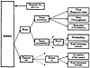

| Previous | Table of Contents | Next |
Saleability of results is probably the key justification when considering the expense and the labor of measurements. It is much easier to convince others if it is a real measurement. Most people are skeptical of analytical results simply because they do not understand the technique or the final result. In fact, people who develop new analytical modeling techniques often validate them by using simulations or actual measurements.
Sometimes it is helpful to use two or more techniques simultaneously. For example, you may use simulation and analytical modeling together to verify and validate the results of each one. Until proven guilty, every person should be presumed innocent. The performance counterpart of this statement is until validated, all evaluation results are suspect. This leads us to the following three rules of validation:
In particular, the need for the third rule regarding validation of measurement results should be emphasized. This is the most commonly ignored of the three rules. Measurements are as susceptible to experimental errors and bugs as the other two techniques. The only requirement for validation is that the results should not be counterintuitive. This method of validation, called expert’s intuition, is commonly used for simulation models. This and other validation methods can be used for measurement and analytical results and are discussed in Section 25.2.
Two or more techniques can also be used sequentially. For example, in one case, a simple analytical model was used to find the appropriate range for system parameters and a simulation was used later to study the performance in that range. This reduced the number of simulation runs considerably and resulted in a more productive use of resources.
For each performance study, a set of performance criteria or metrics must be chosen. One way to prepare this set is to list the services offered by the system. For each service request made to the system, there are several possible outcomes. Generally, these outcomes can be classified into three categories, as shown in Figure 3.1. The system may perform the service correctly, incorrectly, or refuse to perform the service. For example, a gateway in a computer network offers the service of forwarding packets to the specified destinations on heterogeneous networks. When presented with a packet, it may forward the packet correctly, it may forward it to the wrong destination, or it may be down, in which case it will not forward it at all. Similarly, a database offers the service of responding to queries. When presented with a query, it may answer correctly, it may answer incorrectly, or it may be down and not answer it at all.
If the system performs the service correctly, its performance is measured by the time taken to perform the service, the rate at which the service is performed, and the resources consumed while performing the service. These three metrics related to time-rate-resource for successful performance are also called responsiveness, productivity, and utilization metrics, respectively. For example, the responsiveness of a network gateway is measured by its response time—the time interval between arrival of a packet and its successful delivery. The gateway’s productivity is measured by its throughput—the number of packets forwarded per unit of time. The utilization gives an indication of the percentage of time the resources of the gateway are busy for the given load level. The resource with the highest utilization is called the bottleneck. Performance optimizations at this resource offer the highest payoff. Finding the utilization of various resources inside the system is thus an important part of performance evaluation.

FIGURE 3.1 Three possible outcomes of a service request.
If the system performs the service incorrectly, an error is said to have occurred. It is helpful to classify errors and to determine the probabilities of each class of errors. For example, in the case of the gateway, we may want to find the probability of single-bit errors, two-bit errors, and so on. We may also want to find the probability of a packet being partially delivered (fragment).
If the system does not perform the service, it is said to be down, failed, or unavailable. Once again, it is helpful to classify the failure modes and to determine the probabilities of each class. For example, the gateway may be unavailable 0.01% of the time due to processor failure and 0.03% due to software failure.
The metrics associated with the three outcomes, namely successful service, error, and unavailability, are also called speed, reliability, and availability metrics. It should be obvious that for each service offered by the system, one would have a number of speed metrics, a number of reliability metrics, and a number of availability metrics. Most systems offer more than one service, and thus the number of metrics grows proportionately.
For many metrics, the mean value is all that is important. However, do not overlook the effect of variability. For example, a high mean response time of a timesharing system as well as a high variability of the response time both may degrade the productivity significantly. If this is the case, you need to study both of these metrics.
In computer systems shared by many users, two types of performance metrics need to be considered: individual and global. Individual metrics reflect the utility of each user, while the global metrics reflect the systemwide utility. The resource utilization, reliability, and availability are global metrics, while response time and throughput may be measured for each individual as well as globally for the system. There are cases when the decision that optimizes individual metrics is different from the one that optimizes the system metric. For example, in computer networks, the performance is measured by throughput (packets per second). In a system where the total number of packets allowed in the network is kept constant, increasing the number of packets from one source may lead to increasing its throughput, but it may also decrease someone else’s throughput. Thus, both the systemwide throughput and its distribution among individual users must be studied. Using only the system throughput or the individual throughput may lead to unfair situations.
Given a number of metrics, use the following considerations to select a subset: low variability, nonredundancy, and completeness. Low variability helps reduce the number of repetitions required to obtain a given level of statistical confidence. Confidence level is explained in Chapter 12. Metrics that are ratios of two variables generally have a larger variability than either of the two variables and should be avoided if possible.
| Previous | Table of Contents | Next |
){kind=link}
){kind=link}